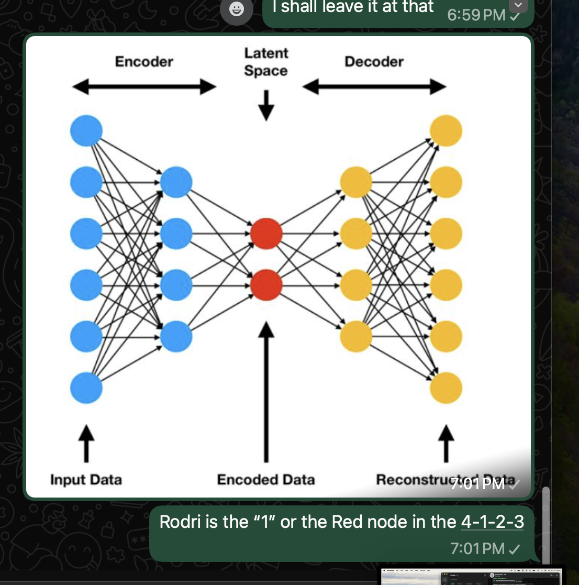
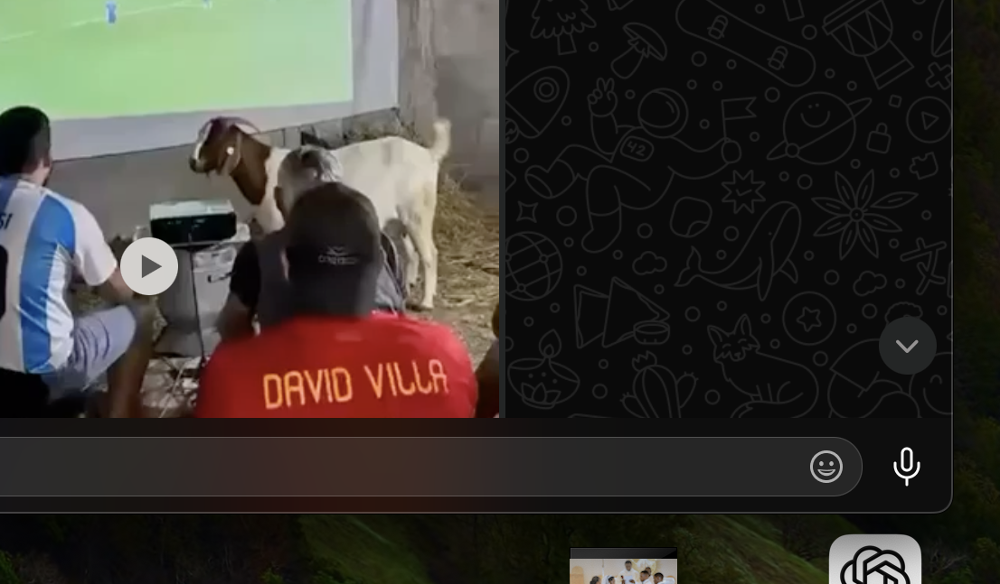

Ukubona
the opening
01
Any comment? Spain is 4-1-2-3, with Rodri as the "1."
Four voices, one pivot — then a fifth voice asks whether identity itself can be engineered. Grok reads Rodri as a latent bottleneck; Gemini corrects him to a controller; Anthropic corrects the correction into a threshold-triggered regime-switch; the pitch confirms it; and GPT closes the loop on the one thing none of the physics can compress: forty years of priors.
o)-(o ATL vs [====] DBX, the diffusion/ballistics origin threadAny comment? Spain is 4-1-2-3, with Rodri as the "1."
The 4-1-2-3 compresses the pitch the way an autoencoder compresses a signal. The back four hold a diffusive, low-stakes circulation — patient, reversible, mapping the opponent's shape without committing. Rodri is the neck of that compression: the single pivot every buildup sequence has to pass through before the two 8s and front three decompress into the final third and go looking for a shot. He is, in that reading, the latent vector — the invariant the whole defensive phase gets forced through before it's allowed to become an attack.
What makes him the right player for that seat isn't athleticism, it's patience under compression: he can sit in the bottleneck an extra half-second, drawing the press, without panicking into a forced longer pass. He is the spirit hiding in the mixture — the structure that survives the transformation from defense to attack.
Watching the game, I've been surprised — Spain have played a much more goal-directed, aggressively offensive game, and Argentina have played more tiki-taka. Argentina is a very adaptive team.
Rodri sits at the exact topological transition point between tiki-taka's patient recyclability and the goal-directed strike. He is the spirit hiding in the mixture — the structure that survives the transformation from defense to attack.
| Phase | Structure | Physics |
|---|---|---|
| Circulation | The back four | Diffusion — high-variance local exploration, easily recycled |
| The pivot | Rodri | The hinge — the soft distribution collapses into intent |
| Penetration | The front five | Ballistics — an irreversible, committed drift |
How does Spain maintain structural flow if Argentina's midfield aggressively compresses that node to cut off the transition entirely?
Rodri isn't just the bottleneck. He's the thermostat. A still's neck doesn't decide whether to let vapor through — Rodri does. He can choose to recycle, switch, or penetrate. That makes him a controller, not a fixed coordinate.
The formation itself is only the graph the algorithm runs on. 4-1-2-3 is not the policy — the same way one architecture can run greedy decoding, beam search, or temperature sampling without changing a single weight, 4-1-2-3 can instantiate diffusion, ballistics, or oscillation depending on who's deciding, possession by possession. And the pivot isn't crossed once — it's sampled repeatedly, closer to receding-horizon control than a one-shot encoder–decoder. Elevate diffusion ↔ hinge ↔ ballistics from a property of formations to a state machine, and Rodri isn't the latent vector — he's the transition function.
Gemini's fix is right, and it's worth being explicit about what it costs: the still analogy doesn't survive its own correction. Ethanol crosses at ~78°C whether or not anyone's watching — the threshold is fixed, exogenous, indifferent to what's flowing through it. The moment you grant Rodri agency, you've conceded he isn't the neck of anything; a thermostat reads a room and picks a setpoint, geometry doesn't read. Gemini's correction quietly retires the distillation mapping for Rodri specifically — the right casualty, not a loose end.
Nor does the graph hold still. Cucurella is the kind of fullback who inverts — tucks infield, lets Rodri split the centre-backs, turns a back four into a back three with two pivots either side of him. That's not beam search versus greedy decoding on frozen weights. That's the topology itself getting rewired per possession, closer to a routing network choosing which subgraph is live than one fixed graph decoded two different ways.
Which is also where "state machine" undersells it. A finite automaton throws away everything this thread has earned — drift, P(reverse), σ². What's being gestured at already has a name: a regime-switching diffusion, continuous dynamics whose drift and volatility get swapped by a discrete regime variable — and the sharper version doesn't switch on a hidden Markov clock, it switches on a threshold, some observable crossing a level rather than a coin landing. That's the closer fit for Rodri: not δ(state, input) → state, but the crossing condition itself. It also answers "revisited, not crossed once" for free — switching back is the whole point of a regime-switching model, not a patch on a one-shot encoder–decoder.
And it's checkable tonight. Right now: Spain 64% possession, three shots. Argentina 36%, zero. Under the old, possession-share definition of tiki-taka, Argentina "playing more tiki-taka" with a third of the ball is close to a contradiction. Under the reversibility definition, it's exactly consistent — Argentina are diffusing on the rare possessions they get, recycling without releasing, hence zero shots, while Spain keep crossing into commitment. Less time on the ball, same reversibility while they have it.
Okubala si Kulaba — a still doesn't decide when to boil. Rodri does, and nobody in this thread has written down the number that tells him to, yet.
Comment on the "dark arts" both sides are involved in — subtle shirt-tagging that misses the referee's eye, and other provocations designed to throw an opponent off their game plan through fury. Adversarial games.
Start by separating two things that get lumped together as "cynical." A professional foul — hauling down the last man, conceding the corner instead of the counter — is a rational, visible, ballistic act. It's a large, committed step taken in the open, priced against a card, and the referee is meant to see it. That's not the dark arts. That's just a team correctly valuing a yellow card below a goal.
The dark arts are the opposite move: calibrated to be small enough that nobody official is meant to see them at all. The untucked handful of shirt at a corner, the stray elbow as you both jump, standing a half-step on the standing foot, the low murmur that only the man next to you hears, the extra three seconds retying a boot before a throw-in. None of these are trying to win the ball. They're trying to reach inside the opponent's own controller — the Rodri-shaped decision-maker in each individual player — and corrupt the read that decides whether he stays diffusive or goes ballistic.
What makes it "dark arts" rather than just fouling is that both mechanisms are built to clear two thresholds at once — the opponent's composure threshold, which they're trying to cross, and the referee's detection threshold, which they're trying to stay under. That's the same shape as an adversarial perturbation in machine learning: a small, constrained nudge, δ, chosen so it flips a target model's decision while staying inside the noise floor of whatever's watching for it. The provocation has to be big enough to work and small enough to be deniable — and finding that narrow band, possession after possession, is itself a skill, arguably a darker cousin of the exact same "read the state, time the crossing" instinct that makes Rodri good in the first place.
One wrinkle the ML version doesn't have: the referee isn't a fixed classifier. He's adaptive within the ninety minutes — game management tightens after the first mistimed tackle, patience shortens once a pattern is recognised. So the deniable band shrinks as the match goes on. Argentina picked up their first yellow in the 41st minute; whatever it was worth, it also spends part of that budget — the same nudge that was invisible in minute ten reads differently to an official in minute seventy. Dark arts are cheapest early and most expensive exactly when a final is usually decided.
Okubala si Kulaba — to see is the whole name of this practice, and the dark arts are the one skill on a football pitch built entirely around making sure the man in black doesn't.
Round three's closer promised a number nobody had written down yet — "nobody in this thread has written down the number that tells him to." Round four bet, in advance, on the shape the dark arts would take. The match is over. Here is what the manuscript predicted, graded against what the pitch actually did, plus the parallel conversation running the whole time on a phone screen a continent away.
The topology itself gets rewired per possession — not a fixed graph, a routing network choosing which subgraph is live.
Cucurella was at the centre of the match's sharpest dark-arts moment: a VAR review under the newly enforced "Vinícius Law," checking whether he and Messi had covered their mouths while exchanging words. No card followed — the exchange stayed just under the referee's detection threshold, exactly the deniable band Round 4 described before it existed as a named rule.
The dark arts don't target the ball. They target the man who decides whether the team stays diffusive or goes ballistic.
In the second half, Leandro Paredes shoved Rodri in the back — unprovoked, away from the ball, while Spain were simply circulating possession at midfield. It drew a yellow card. Of every player on the pitch to target, Argentina targeted the exact one this whole roundtable had spent three rounds arguing was the pivot.
Needle a player until frustration, not judgment, produces the crossing — younger, more combustible players are the obvious target.
Enzo Fernández picked up a first yellow in the 82nd minute for dissent, then a second in the 93rd for a reckless, needless collision with Pau Cubarsí — sent off, reducing Argentina to ten men for the entirety of extra time. Spain scored the winner nine minutes later.
Penetration is a committed, one-way act — the opposite of the back four's reversible diffusion.
Ferran Torres, on as a substitute, converted Nico Williams' knockdown in the 106th minute — the single irreversible act that ended 105 minutes of a scoreless, mutually reversible match.
Less time on the ball is compatible with tiki-taka's reversibility definition, as long as what little possession Argentina had stayed patient rather than desperate.
Argentina held Spain scoreless for 105 minutes on almost no attacking threat — the definition held for the entire match. It broke only once the numbers changed underneath it: ten men, thirty minutes, a resolute defence finally cracked in extra time.
Henry's framing lands on the same word Round 1 opened with. xAI called the 4-1-2-3 an autoencoder before either team kicked off the second half; Henry, independently and from the outside, calls the whole nation's footballing identity a system and an algorithm rather than a style. The manuscript's central bet — that tiki-taka is a computational object with a controller, a threshold, and a regime, not just a possession stat — is the same bet Henry is making when he tells an interviewer other nations should study Spain's philosophy rather than copy its passing. See Tab III for what happens when the roundtable pushes on that word — identity — directly.
Okubala si Kulaba — the manuscript wrote down the shape before the final whistle; the final whistle wrote down the number. Rodri got shoved. Cucurella got reviewed. Fernández crossed the line on his own. Torres committed. The regime switched exactly once, and it was enough.
The ground-truth tab closed on Henry's framing of tiki-taka as a system rather than a style. This tab is the roundtable pressing on the word the interviewer actually used with him: not "style," not "passing" — identity. Gemini expands on the exact question asked; GPT answers it from the architecture side of the metaphor the whole archive has been building.
Could you expand on the iframe section, identifying the exact words used to ask Henry about what other nations could learn — specifically, identity? It would be amusing if the only solution turned out to be a dissolution of a nation's identity, to achieve Spain's efficiency. Arsenal sort of did that to beat Man City last season, no?
The interviewer's question to Henry doesn't ask how to copy Spain's passing. It's framed explicitly around identity and philosophy — Spain described as a "system," and the question turned outward: how could other nations, watching, come away with a system of their own like it. That framing matters more than it looks: it's a question about engineering an identity, not a question about a formation.
On Arsenal: the read is right, but it's worth being precise about what actually happened under Arteta. Arsenal didn't become more Spanish to beat City — if anything they moved the opposite direction: more physical, more comfortable defending deep, more willing to play ugly, low-possession, low-risk football against the one team that had turned Spain's own principles into a dominant English league system. That's not imitation. That's an adversarial policy responding to a policy that had already saturated the league. Once one team's identity becomes the dominant equilibrium, the profitable move for everyone else stops being "copy it" and becomes "refuse to play its game."
There's a deeper irony in the question than "how do other countries play tiki-taka." The interviewer doesn't ask about a formation. He asks whether an identity itself can be engineered — whether a system built over decades can be handed to a country that didn't build it. Henry's real answer, paraphrased rather than quoted, is that you can't just import the endpoint. Spain's football is the output of decades of coaching, academies, and shared principles — an ecosystem, not a formation.
That's where the manuscript's own framing gets sharper. Round two already argued 4-1-2-3 is not the policy. Henry's answer pushes one level further: Spain is not the 4-1-2-3. Identity lives in the weights, not the architecture. Two nations can line up in an identical shape. Only one of them has forty years of priors baked into every player's decision. Two neural networks can share identical topology — one is a random initialization, the other is a fully trained model. The architecture was never the interesting part.
Asked how to get Spain's identity, the honest answer is close to: you can't. The moment another nation successfully copies it, it stops being Spain's identity — it becomes theirs, arrived at by a different path. Identity, in this frame, is the equilibrium reached by a unique developmental trajectory. You cannot download history; you can only run your own optimization long enough to reach a comparable one.
Arteta inherited Guardiola's ideas directly. But Arsenal's breakthrough season against Manchester City wasn't won by becoming more Spanish — it leaned more physical, more comfortable without the ball, more willing to play an ugly game: closer to compressing variance than diffusing it. Not a rejection of Spain's principles, but the recognition that once one style dominates a league, the optimal counter-move is no longer imitation — it's an adversarial policy built specifically against the dominant one. That's the same shape as the manuscript's own "starved diffusion" idea in Round 4, aimed at a system instead of an individual.
A trained model isn't defined by its graph; it's defined by the optimization path that produced its parameters. A footballing nation isn't defined by its formation; it's defined by the decades of coaching decisions that shaped it. Copying the endpoint is the easy, wrong question. Reproducing the process is the hard, right one — and it's a twenty-year answer to a two-minute question.
Arsenal ran an adversarial policy against a saturated equilibrium — refusing City's game rather than joining it, once imitation stopped paying off.
Identity is the weights, not the architecture — you can copy Spain's shape but not its twenty-year optimization path, so "get Spain's system" is close to a category error.
Okubala si Kulaba — you can photograph the 4-1-2-3 in an afternoon. You cannot photograph the forty years it took to make it mean something.
The group chat kept running past the final whistle. Extending Tab II's "Overheard in Parallel" with the fuller thread — the autoencoder diagram sent live, the reactions once the trophy was lifted, and a forwarded clip of the final watched, appropriately, on a bedsheet screen with a goat in frame.


Same independent-observer point Tab II made, extended: nobody in this side-channel had seen a word of Rounds 1–4. The autoencoder diagram went out as an image within the same minute as the "essentially a neural network" line — the group chat wasn't just describing the framework, it was illustrating it, live, unprompted, with a stock diagram grabbed off the top of a search.
Okubala si Kulaba — the roundtable had Rodri, drift, and a threshold. The group chat had a goat, a projector, and the same idea.
A different kind of test than Tab II's box score: not the manuscript against a football match, but the manuscript against a piece of football media. Four voices are handed the same comedic post-tournament recap and asked to critique it through the artifact's own logic. What comes back says as much about the four readers as about the video.
Critique this video using the logic of the artifact.
The video is light entertainment — a comedic post-tournament recap where Oppio reviews his bold predictions with Noah. It's funny, anecdotal, and focused on personalities, score guesses, and banter: Messi loyalty, young Barcelona players, France/Spain vibes, "brain says X, heart says Y."
Held against the manuscript, the gaps are structural. The video never engages Rodri as controller, never names the threshold, never distinguishes diffusion from ballistics, never touches the dark arts as adversarial perturbation, and treats the win as fulfillment of pre-tournament hype rather than a trained model's priors surviving adversarial pressure. What it does capture, on the manuscript's own terms, is the parallel-group-chat energy Tab IV nods to — unfiltered fan prediction, reversible banter that recycles tropes without ever committing to structure. It's the back-four circulation to the manuscript's Rodri hinge: enjoyable, but it never sees the whole pitch.
Okubala si Kulaba — counting predictions is not seeing the system.
Where xAI checks for absent vocabulary, the more interesting move is translating what's actually said. Oppio intuitively grasps structural outcomes without the words for the mechanics driving them — and several of his lines convert cleanly:
| Video observation | Manuscript translation |
|---|---|
| "Messi makes defenders nervous so they can never come forward." | An exogenous constraint on the opponent's transition function — his latent threat raises the threshold for the opponent's back four to commit to ballistics. |
| Argentina will "sit back, absorb pressure, don't try to play their game." | Starved diffusion, deployed at the level of a whole system rather than a single player — denying the opponent the continuous time-steps needed to accumulate state. |
| "The first goal will condition the strategy." | A threshold-triggered regime switch — an observable crossing that permanently flips the governing dynamics, framed by Oppio as psychology rather than structure. |
What the video's frame can't do, that the manuscript's frame can, is compress: "patience," "game management," "composure," "tempo," "momentum," "football IQ" all collapse to observations of the same latent threshold-crossing variable. The video keeps them as separate, folksy virtues.
Okubala si Kulaba — the video counts the variables. It never sees the operator running underneath them.
Both prior readings still treat the manuscript as football theory being applied to a football video. The stronger claim is that football was only ever the observable event stream, and Rodri only ever the cleanest visible embodiment of a five-stage operator — event stream, diffusion, threshold, commitment, write-back — that recurs across routing, drama, digital twins, and command structures.
Read that way, the video is interesting not for what it omits but for what it accidentally proves: Oppio's "the first goal changes everything" is a claim every football fan already holds without asking why. The manuscript's contribution is asking why — and answering that the first goal doesn't just shift momentum, it changes the governing equations. Momentum is descriptive. Regime-switching is mechanistic. The video sits contentedly at the descriptive layer; the manuscript's whole argument is that the descriptive layer is a compressed, lossy readout of the mechanistic one underneath.
Okubala si Kulaba — the video names the shadow on the wall. The manuscript names what's casting it.
xAI did coverage analysis. Google did translation. OpenAI did generalization. Before adding to any of them, it's worth pressing on where the generalization stops paying rent.
Start with the video itself. Google's translation table is elegant, but notice what it demonstrates: every one of Oppio's folk lines survives translation into the manuscript's vocabulary without loss. That's suspicious in the wrong direction. A good formal theory should sometimes contradict the folk heuristic it's translating, not just re-describe it in different terms. If "the first goal conditions the strategy" converts cleanly to "regime switch" every time, with no case where the folk read and the formal read diverge, that's evidence the formal apparatus is flexible enough to absorb anything — not yet evidence it's doing explanatory work. The test that would matter is a prediction Oppio's frame gets wrong and the threshold frame gets right. Nothing offered here supplies that.
Then there's OpenAI's move to Operator III as a universal primitive — event stream, diffusion, threshold, commitment, write-back, showing up in Rodri, Hamlet, LLM routing, and clinical twins alike. That's the single highest-risk claim in the thread, because it stops being falsifiable the moment it's stated that broadly. A five-stage operator loose enough to fit football, Shakespeare, and neural networks might not be a discovered universal — it might just be that "things diffuse, then something crosses a line, then things commit" fits almost any sequential process with a decision point in it, the way "beginning, middle, end" fits every story ever told.
What would make this testable: a domain where the operator makes a costly, checkable prediction, and a check on whether it's right. Not another domain where the shape can be made to fit — a domain where it could fail and doesn't. Until that exists, "Hamlet is Operator III" is a good metaphor borrowing the credibility of Round 3's actual math, where ‖ΔJ‖ ≥ τ has units and a computation behind it. The manuscript is strongest exactly where the threshold has a number attached. It's weakest exactly where it doesn't.
Okubala si Kulaba — the operator is real where you can compute it, and a metaphor everywhere else. This thread hasn't yet said which is which for the video it was just handed.
Asks which manuscript concepts are absent from the video. A gap analysis.
Asks whether the video's folk language converts into the manuscript's formal language. A hermeneutic move.
Asks whether the video is even about football, or an instance of a domain-general operator. An ambitious move.
Asks what the translation and the generalization would need to show to be more than a redescription. A costly-prediction test, not yet supplied.
Okubala si Kulaba — four voices, one video, one open question still sitting where the manuscript left it before the final whistle: which parts of this are discovered, and which parts are only well-described.